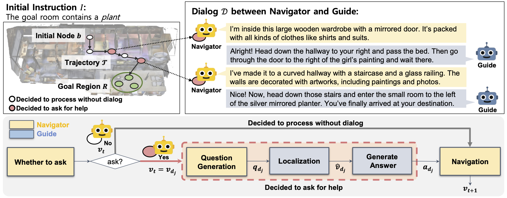
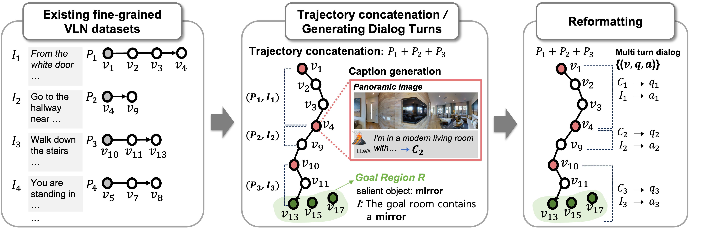
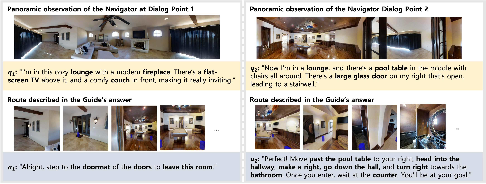
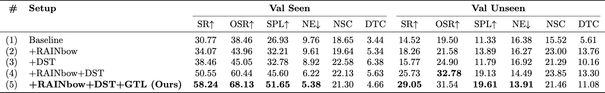
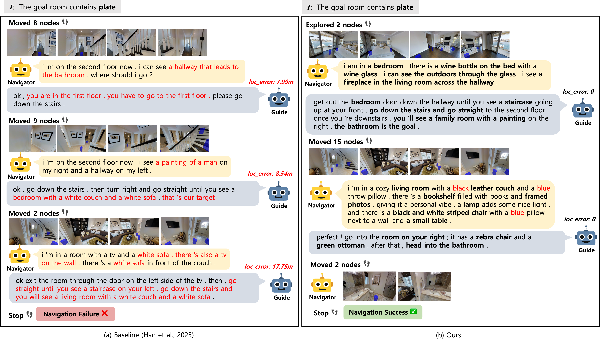

For embodied agents capable of physical interaction, the capability to create and understand dialog is crucial to ensure both safety and effectiveness. While DialNav (han2025dialnav) provides a framework for holistic evaluation of the dialog--execution loop in photorealistic indoor navigation, its performance remains limited by a critical scarcity of training data (2K episodes). To address this, we propose an automatic generation pipeline, and construct the RAINbow dataset, a large-scale training dataset with 238K episodes for DialNav. Our pipeline leverages existing VLN dataset into multiturn dialog and creates cost efficicent and high quality dataset. Then, we introduce two additional complementary advances to unlock the data's full potential: (1) Dual-Strategy Training, a navigation training scheme to align the navigation training with the dynamic dialog-navigation loop, and (2) a localization model that leverages VLN knowledge. By combining these complementary solutions, our model substantially outperforms the success rate of the baseline on both Val Seen (58.24, +89%) and Val Unseen (29.05, +100%) splits, establishing a new state of the art.

Overview of the DialNav task. Top: The Navigator starts at an initial node b and navigates to reach the goal region R. Since the initial instruction is underspecified, the Navigator engages in multi-turn dialog with a remote Guide to acquire additional guidance along the navigation. Bottom: At each step, the Navigator follows a modular decision process: it either proceeds autonomously (Navigation) or requests help (Question Generation). When a question is asked, the remote Guide localizes the Navigator and provides an answer describing the next path to the goal. This forms an alternating loop of dialog and action that continues until the goal region is reached.

Overview of the dataset generation pipeline. (Left) We start from existing single-turn fine-grained VLN datasets, where each path is paired with its instruction F_j. (Middle) Multiple sub-trajectories are concatenated into an extended trajectory. The starting node of each sub-trajectory becomes a dialog point v_{d_j}, and at each dialog point, a panoramic caption C_j is generated using a vision–language model. The original fine-grained instructions F_j are repurposed as dialog answers, while the final node defines the goal region $R$. (Right) Caption–instruction pairs (C_j, F_j) are then reformatted into natural multi-turn dialogs using a large language model, producing large-scale dialog-style data for DialNav training.

Qualitative example of RAINbow. This figure shows a 2-turn dialog episode in RAINbow. The left column shows the first dialog exchange, and the right column shows the second. The generated dialogs exhibit a natural conversational flow across turns and are well-grounded in both the Navigator's visual observations (e.g. "fireplace", "pool table") and the route the Guide describes (e.g. "leave this room", "past the pool table").

Performance gains from progressively adding components. RAINbow: training with RAINbow dataset. DST: training navigation module with Dual-Strategy Training. GTL: adopting Graph-based Transformer Localization model. RAINbow alone (Row 2) offers performance gains, but its potential is unlocked when combined with our proposed DST (Row 4), which significantly amplifies its effect. GTL (Row 5) provides further improvement, leading to the best overall performance.

Qualitative comparison on the same task instance between the baseline(left) and Ours (right). The baseline agent produces broken language with wrong details (marked in red), likely due to dataset scarcity, leading to high localization errors and navigation failure. In contrast, our agent provides richer, well-grounded descriptions (marked in \textbf{bold}), yielding accurate localization and reliable instructions, ultimately leading to successful navigation.
@article{han2026advancing,
title={Advancing DialNav through Automatic Embodied Dialog Augmentation},
author={Han, Leekyeung and Jung, Sangwon and Min, Hyunji and Jeong, Jinseong and Kim, Minyoung and Seo, Paul Hongsuck},
journal={arXiv preprint arXiv:2606.19948},
year={2026}
}